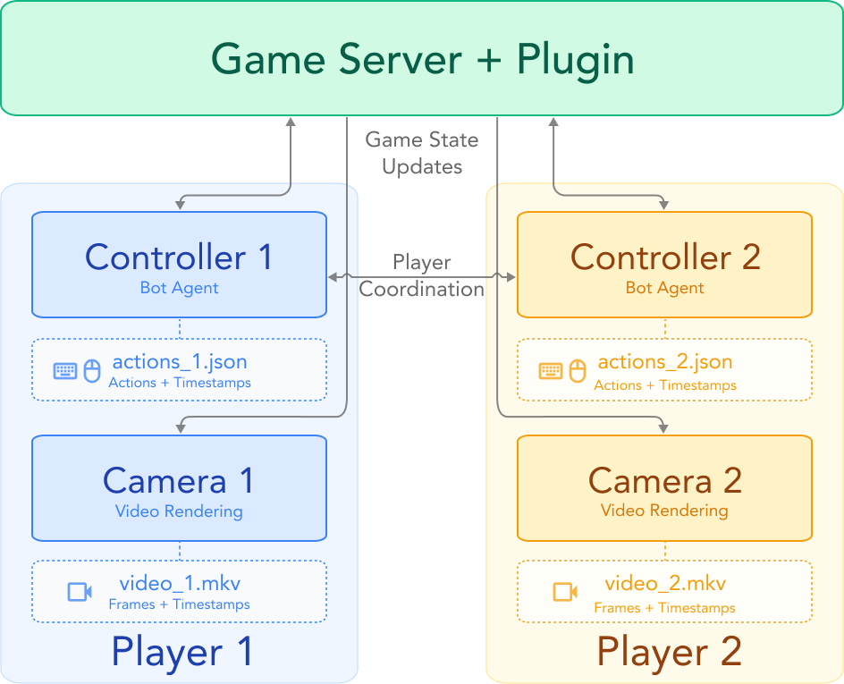

Paper Reading · Game World Models
Solaris：多人 Minecraft world model 的数据系统、模型结构和 Self Forcing
这篇论文的核心不是“用 AI 生成 Minecraft 视频”，而是回答多人 world model 的基础工程问题： 如果多个玩家各自有第一人称视角、各自动作，但共享同一个世界，数据怎么采、模型怎么表示、训练怎么抗 rollout drift。
0. 一句话结论
痛点：单人 video world model 只需要预测一个玩家的下一帧；多人场景还必须让多个视角、多个动作、一个共享世界彼此一致。 核心招：Solaris 同时做了 SolarisEngine 数据采集系统、显式 player 轴的 latent video model、从 bidirectional 到 causal 再到 Checkpointed Self Forcing 的训练流水线。 效果：在 Minecraft 双人评测上，它比简单 frame concat 更擅长 grounding、building 和跨视角 consistency；同时发布数据、模型和引擎代码。 代价：它仍主要是双玩家、bot 行为、VLM-as-judge 评测，长时间离开视野后的 persistent memory 也还不稳。
- 这篇到底在解决什么
- 多人生成式 world model 的 state representation 问题：世界状态不是单个视频 stream，而是多名玩家在同一物理/几何世界中的同步观测和动作。
- 核心 insight
- 可用的多人 world model 不是单独一个模型 trick。它必须有成体系的数据系统、agent-aware token layout、rollout-aware training 和专门测 consistency 的评测。
- 对我们做 UE/游戏 WAM 数据集的启发
- 只录每个玩家屏幕不够。必须同时录共享世界状态、每个 actor 的 action/event、精确时间戳、visibility/interaction 关系，以及能检查跨视角一致性的 eval episodes。

1. 论文定位
Solaris 属于 action-conditioned multiplayer video world model。输入是多个玩家过去的图像和动作，输出是多个玩家未来的第一人称观察。 它不是传统 Minecraft 引擎，也不是 RL 里的 compact dynamics model；它更像一个可交互的视频生成器，但必须维护共享世界的一致性。
这里 \(P\) 是玩家数，\(o^p_t\) 是第 \(p\) 个玩家的第一人称帧，\(a^p_t\) 是该玩家动作。 难点不是生成每个 stream 的局部画面，而是当玩家 A 看向玩家 B、B 挖方块、A 转身再回来时，两个 stream 应该描述同一个世界。
| 路线 | 状态在哪里 | 主要瓶颈 | Solaris 的差异 |
|---|---|---|---|
| 单人 video world model | 最近几帧和单人 action stream | 没有跨玩家一致性约束 | 把玩家作为显式轴，训练同步多人 video-action 预测 |
| Frame concat baseline | 把双人画面拼成大图 | 玩家数和分辨率耦合，action/identity 不清楚 | 每个玩家仍保留独立 latent stream，通过 self-attention 联通 |
| 外部 memory 路线 | 显式地图、pose、对象状态 | 需要可读写的结构化世界状态 | Solaris 主要把共享状态压在 neural latent 和 attention 里 |
| 多人游戏引擎 | 规则、ECS、物理和网络同步 | 内容生成能力弱，无法学真实视频分布 | 保留 action conditioning，但用 video diffusion 生成观察 |
2. SolarisEngine：先把数据系统做出来
Solaris 最有价值的一部分是 SolarisEngine。论文和代码里的设计很明确：多人 world model 的训练样本不能靠普通 screen recording 拼出来， 它需要每个玩家的图像、动作、服务器状态和时间戳在同一 episode 内精确对齐。

| 组件 | 代码/职责 | 为什么重要 |
|---|---|---|
| Controller Bot | solaris-engine/controller，基于 Mineflayer，执行高层 task primitives 并记录 action JSON。 |
负责产生可控、可复现、带动作标签的多人交互，而不是随机视频。 |
| Camera Bot | solaris-engine/camera，官方 Minecraft Java Client + Xvfb + ffmpeg/NVENC，20 FPS 录制 1280x720。 |
controller bot 负责动作，camera bot 负责真实客户端渲染；两者解耦，避免 bot API 图像和真实客户端不一致。 |
| Server Plugin | solaris-engine/server，同步 controller/camera 的位置、朝向、GUI、动画，让 camera bot 隐身。 |
保证画面和动作对应同一个玩家实体，特别是挖掘、放置、攻击等动画。 |
| Spectator Bot | solaris-engine/spectator，辅助插件同步 block-breaking 等视觉状态。 |
很多游戏事件不是简单 pose/action，需要服务器侧信号补全。 |
| Postprocess | postprocess/process_recordings.py，用 ffprobe/absolute timestamps 对齐 action 和 video。 |
世界模型训练最怕 off-by-one：论文代码里把第 \(t\) 帧定义成 action \(t\) 之后的视觉结果。 |
这套系统对 UE 数据集尤其有启发：多人数据不是“每人一条 mp4”，而是一个 episode graph。
最少要有 actor_id、camera_id、timestamp、raw_action、semantic_event、world_state_digest、visibility_edges 和 sync_quality。
3. 方法总览
模型本体继承 MatrixGame 2.0 的 latent video diffusion 框架，但把单人视频扩成多人张量。 论文写法里，多人 latent 是：
\(B\) 是 batch，\(P\) 是玩家数，\(T\) 是 latent 时间长度，\(H,W\) 是 latent 空间网格，\(C\) 是 VAE latent channel，\(D\) 是动作维度。
代码中 src/utils/multiplayer.py 也沿用这个约定：video_BPFHWC 和 action_BPFD。
multiplayer episode
-> per-player RGB frames and action JSON
-> VAE encoder: x in (B, P, T, H, W, C)
-> action preprocessing: a in (B, P, T, D)
-> SolarisMPModel
-> independent 3D RoPE per player
-> learned player ID embeddings
-> multiplayer self-attention over player tokens
-> per-player cross-attention / FFN / action conditioning
-> flow-matching velocity v_theta(x_sigma, sigma, a)
-> rollout future frames for every player
4. 关键创新点
创新 1：数据系统是模型能力的一部分
旧方法为什么不行：多人世界模型要学“我看到你，你也在同一个位置看到我”，这需要同步 multi-view/multi-action supervision。 公开游戏视频通常没有低层动作，也没有每个玩家的时间对齐轨迹；单人 Minecraft 数据如 VPT 不能直接监督多人 consistency。
它怎么改：SolarisEngine 用 controller bots 产生动作，用 camera bots 录官方客户端画面，用服务器插件同步两者，再用 postprocess 对齐 action/video。 最终数据集包含 9,240 episodes、12.64M frames，任务覆盖 building、combat、movement、mining，世界类型覆盖 Superflat 和 Normal。
为什么有效：多人一致性不是 loss 凭空造出来的。模型必须在训练样本里见过“多个玩家的动作共同改变一个世界”的监督信号。
代价/限制：数据来自 programmed bots，动作可能比真人 jerky；任务空间受脚本 primitive 限制；论文也承认长时间离开视野后的 memory 还不够持久。
实现细节：engine README 里整个 collection workflow 由 Docker Compose 编排。双玩家录制会拉起 controller、camera、server、spectator 等多类容器，项目文档里提到 2-player 配置约为 \(2\times4+1=9\) 个长期运行容器。
创新 2：保留 player 轴，而不是 frame concat
旧方法为什么不行：frame concat 把两名玩家图像拼成一个大画面，短期 movement 可能还行，但玩家身份、动作归属和空间一致性都会变得模糊。 玩家数变化时，输入分辨率和 token 位置也跟着变，扩展性差。
它怎么改：Solaris 把每个玩家作为一条 latent stream，使用 learned player ID embeddings 区分玩家，并对每个玩家独立使用 3D RoPE。
代码里 multiplayer_method: multiplayer_attn 会保留 \((B,P,F,H,W,C)\) 布局；另一个 concat_c 分支才是把玩家 channel 拼起来的对照路线。
为什么有效：player 轴让模型知道“某个动作属于哪个观察流”。self-attention 又允许 A 的 token 读到 B 的 token，所以 B 挖方块或看向 A 可以影响 A 的未来观察。
代价/限制：Solaris 仍主要针对固定双玩家；learned player ID 对更多玩家的外推不如 γ-World 的 simplex agent encoding 自然。
创新 3：从 bidirectional teacher 到 causal rollout
旧方法为什么不行：普通 video diffusion 可以双向看全段视频，适合离线生成；交互式 world model 推理时只能看过去，必须 causal。 如果直接训练 causal few-step rollout，误差会在长时间闭环中积累。
它怎么改：训练分四段：先用 MatrixGame 2.0 初始化，在 VPT 单人数据上做 bidirectional 预训练；再在 Solaris 多人数据上训 bidirectional teacher； 然后用 Diffusion Forcing 训练 causal model；最后用 Checkpointed Self Forcing 做 rollout-aware distillation。
为什么有效：bidirectional teacher 学的是高质量局部分布，causal student 学的是在线滚动条件，Self Forcing 把 student 自己生成的 corrupted context 放回训练环节，缩小 train/test mismatch。
实现细节：README 的训练命令对应 trainer_sp、trainer_mp_bidirectional、trainer_mp_causal、trainer_mp_sf 四个 runner。
config/runner/trainer_mp_sf.yaml 里 generator lr 是 3e-6，critic/fake lr 是 3e-7，总 steps 为 1200。
创新 4：Checkpointed Self Forcing 让长窗口训练可承受
旧方法为什么不行：Self Forcing 要让模型先自回归 rollout，再用生成出来的上下文训练下一步。 如果对整个 rollout 图保留梯度，显存会随 teacher context 和 student context 近似相乘。
它怎么改：论文的算法先用 no-grad rollout 生成 student frames，只缓存 clean estimates 和 noisy inputs；然后 stop gradient，再通过 teacher forcing mask 做一次并行重算。 论文给出的内存变化是从 \(O(L_t L_s)\) 降到 \(O(L_t)\)。
为什么有效：训练信号仍来自“模型自己滚出来的上下文”，但反传图只覆盖重算的一次 forward。这样可以使用 KV backprop，而不是为了省内存完全切断 cache 梯度。
代码现实：src/runners/trainer_mp_sf.py 里 self_forcing_rollout 会用 denoising timesteps [1000,750,500,250,0]，随机停在某个 denoise step，缓存 previous_frame 和 final_frame。
generator loss 里 DMD gradient 近似写成 fake_x0 - real_x0。
创新 5：评测专门测多人一致性
旧方法为什么不行：只看 FID/FVD 或单帧清晰度，会漏掉 world model 最关键的错误：动作没落地、玩家互相看不见、物体状态跨视角不一致。
它怎么改：Solaris Eval 分 Movement、Grounding、Memory、Building、Consistency 五类任务，并用 VLM-as-judge 判断生成视频是否满足事件。
代价/限制：VLM-as-judge 有主观性和模型偏差。代码里的 vlm_eval 依赖 Gemini API，并输出 query-level 和 episode-level accuracy；这比只看视觉指标更有意义，但仍不是完美 ground truth。
5. 训练和推理流程
| 阶段 | 数据/初始化 | 目标 | 关键设置 |
|---|---|---|---|
| Stage 1 | MatrixGame 2.0 初始化 + VPT 2000h 单人数据 | 单人 bidirectional world model 预训练 | 论文表：lr \(1e{-4}\)，batch 64，120K steps，context 33 frames，冻结 3D VAE。 |
| Stage 2 | Solaris 多人数据 | 多人 bidirectional teacher | lr \(1e{-4}\)，batch 32，120K steps。 |
| Stage 3 | 从 bidirectional 中间 checkpoint 切到 causal | Diffusion Forcing 自回归训练 | sliding window 6 latent frames，即 24 real frames，60K steps。 |
| Stage 4 | causal student + bidirectional teacher/fake critic | Checkpointed Self Forcing | generator lr \(3e{-6}\)，critic lr \(3e{-7}\)，代码里总 1200 steps，generator 每 5 steps 更新一次。 |
| Inference | 历史 observation/action + 当前动作 | 逐 latent block rollout 多玩家未来帧 | README 写明 GPU inference 至少需要 48GB/device；TPU training 需要约 95GB/device 的 v5p 级别内存。 |
输入输出对齐很重要。代码 src/data/minecraft.py 里读取 observation slice 时会把帧右移一位：
第 \(t\) 个 observation 是 action \(t\) 之后的视觉结果。这个约定直接决定 action-conditioned world model 学的是 \(a_t\rightarrow o_t\)，还是 \(a_t\rightarrow o_{t+1}\)。
6. 公式和算法逐行讲解
公式 1：Flow Matching 训练目标
\(x\) 是真实 latent video，形状为 \((B,P,T,H,W,C)\)。\(\epsilon\) 是同形状噪声。
\(\sigma\) 是噪声强度。模型 \(v_\theta\) 预测从 clean data 到 noise 的 velocity target \(\epsilon-x\)。
代码里对应 src/runners/trainer_mp.py 的 target = noise - frames 和 MSE loss。
公式 2：bidirectional vs causal 的噪声采样
bidirectional 训练里，每个玩家、每个时间步共享同一个 noise level，模型可以整体去噪一段视频。
Diffusion Forcing 则给每个 player/time 独立 noise level，使模型学会在“过去干净、当前/未来带噪”的混合状态下做 causal 预测。
代码里 noise_type="standard" 会把 \((B,)\) 维 timestep broadcast 到 \((B,P,T)\)，而 noise_type="diffusion_forcing" 会直接采 \((B,P,T)\)。
算法 1：Checkpointed Self Forcing
given teacher context length Lt and student context length Ls:
1. no-grad rollout causal student for Ls latent frames
2. cache noisy intermediate inputs and clean x0 estimates
3. stop_gradient(generated frames)
4. build teacher-forcing mask M
5. concatenate clean context and generated/noisy context
6. recompute one parallel forward with mask M
7. update student with distribution-matching loss这段算法的核心是第 1-3 步：先让模型在自己的分布上滚起来，但不保存 rollout 计算图。 第 4-7 步再把生成结果当作训练上下文，做一次可反传的并行 forward。这样既训练了 rollout distribution，又避免完整自回归链条占满显存。
公式 3：DMD 式 generator 更新
代码里 fake model 是可训练 critic，real model 是 bidirectional teacher。两者都把同一个 noisy generated frame 还原到 clean \(x_0\)。
fake_x0 - real_x0 被当成 generator 应该走的方向。直觉是：让 causal student 生成的样本在 teacher 看来更像真实 clean video distribution。
算法 2：teacher forcing attention mask
src/utils/tpu/splash_attn.py 和单人模型里的 mask 构造有同一个思想：clean context 和 noisy/generated context 拼在一起后，attention 不能随便互看。
clean tokens 只能看历史 clean tokens；noisy tokens 可以看对应 noisy block 和过去 clean blocks；clean 不能看未来 noisy。
这个 mask 让 parallel forward 模拟自回归条件，同时避免信息泄漏。
7. 代码实现对齐
| 文件/模块 | 我读到的实现要点 | 对应论文说法 |
|---|---|---|
config/model/solaris.yaml |
目标类是 src.models.multiplayer.world_model.SolarisMPModel，multiplayer_method: multiplayer_attn。 |
Solaris 使用显式多人 attention，而不是只做 channel concat。 |
src/utils/multiplayer.py |
定义 multiplayer_attn 与 concat_c 两种输入处理。前者保持 \((B,P,F,H,W,C)\)，后者把玩家并到 channel。 |
architecture ablation 中 frame concat 和 Solaris 的结构差异。 |
src/runners/trainer_mp.py |
实现 flow matching loss、standard noise、diffusion forcing noise、teacher forcing noise。 | bidirectional 与 causal training 的关键差别。 |
src/runners/trainer_mp_sf.py |
包含 generator/fake 两套 optimizer，Self Forcing rollout，DMD loss，KV cache 初始化和 stop-gradient 逻辑。 | Checkpointed Self Forcing 的主要实现位置。 |
src/data/minecraft.py |
定义 Minecraft action keys、camera scaling、mouse compression，以及 observation/action 的一帧对齐约定。 | action-conditioned 数据能否训练稳定，取决于这个对齐。 |
vlm_eval |
评测脚本扫描生成输出和 eval dataset，调用 Gemini，输出 query-level 和 episode-level accuracy。 | Solaris Eval 的 VLM-as-judge 实现。 |
solaris-engine |
controller/camera/server/spectator/postprocess 分层，明确处理真实客户端渲染、服务器同步和时间戳。 | SolarisEngine 不只是采样脚本，而是多人数据系统。 |
【不确定】代码公开版本没有让我完整跑通训练，所以我对训练吞吐、实际 TPU mesh 配置和所有 checkpoint naming 的判断来自 README、config 和 runner 源码。 要彻底确认，需要在 v5p TPU 上按 README 四阶段命令复现一次，并检查每阶段保存的 checkpoint 与论文表格是否一一对应。
8. 实验复盘
项目页给出的 architecture ablation 很能说明问题：frame concat 的 Movement VLM 分数最高，但它在 Grounding、Building、Consistency 上明显弱。 这说明“能按键移动”不等于“理解多人共享世界”。
| 模型 | Movement | Grounding | Memory | Building | Consistency |
|---|---|---|---|---|---|
| Frame concat | 77.08 / 68.87 | 53.13 / 66.57 | 37.50 / 74.44 | 0.00 / 103.24 | 53.11 / 129.38 |
| Solaris w/o pretrain | 69.27 / 42.53 | 29.17 / 49.85 | 18.75 / 67.80 | 0.00 / 86.60 | 49.48 / 121.39 |
| Solaris | 68.23 / 38.48 | 62.50 / 38.03 | 37.50 / 55.13 | 20.83 / 83.58 | 71.35 / 99.40 |
表中每格是 VLM accuracy / FID。Solaris 在 Movement 的 VLM accuracy 不如 frame concat，但 FID 更好； 在 Grounding、Building、Consistency 上提升明显，说明 player-aware architecture 和 pretraining 更有利于共享世界语义。
| Self Forcing 变体 | Pre-DMD | KV-BP | 主要观察 |
|---|---|---|---|
| ODE Reg Init | No | Yes | 多项 VLM 分数接近 0，说明只靠 ODE regularized init 不够。 |
| Causal FT | Yes | Yes | 视觉 FID 变好，但 task accuracy 仍低，预先 DMD 不等于最终好 rollout。 |
| Causal FT | No | No | VLM accuracy 很高，但 FID/Consistency 不稳定，缺 KV backprop 会牺牲分布质量。 |
| Solaris final | No | Yes | 任务分数和视觉质量折中最好，支撑 Checkpointed SF 的必要性。 |
批判地看，Solaris 的实验还有三个隐藏 confound。第一，数据是 scripted bots，不代表真实玩家策略。 第二，VLM judge 对 Minecraft 细节不一定稳定，尤其是 building 和 inventory/action 细节。 第三，论文重点验证双玩家；扩到 4、8、16 名 agent 时，attention 结构和数据复杂度会一起增长。
9. 对 FastWAM / UE 多人数据集的启发
Solaris 给我们的最大启发是：多人 WAM 不能从“模型输入怎么拼”开始，而要从“episode contract 怎么定义”开始。 如果朋友想在 UE 里做多人 world model 数据集，可以直接借 SolarisEngine 的分层思想，但把 Minecraft 组件替换成 UE 原生系统。
| Solaris 设计 | UE 里怎么迁移 | 训练收益 |
|---|---|---|
| Controller Bot | Behavior Tree / Utility AI / RL policy / scripted task primitive。 | 动作分布可控，能覆盖协作、追逐、交易、战斗、建造等交互。 |
| Camera Bot | 每个 pawn 绑定 ego camera，同时录 third-person referee camera。 | 同时支持 ego video world model、cross-view eval 和事件定位。 |
| Server Plugin | UE server authoritative state dump：actor transform、animation state、inventory、collision、damage、object diff。 | 让视频外的 latent state 可审计，可做 eval label 或辅助监督。 |
| Action JSON | 低层 input + 高层 intent/event 双轨记录，例如 move/aim/use 和 attack/build/help/flee。 | FastWAM 可同时学 low-level action dynamics 和 high-level task progress。 |
| VLM Eval | 自动生成 consistency probes：A 看见 B、B 改变物体、A 离开再返回、多人协作完成目标。 | 评测不只看 FID，而是看 shared world 是否真的保持一致。 |
对 FastWAM 来说，Solaris 的 action 表示也很实用：低层动作不要只作为连续向量塞进去，最好保留
raw_action、canonical_action、action_mask、semantic_event 和 actor_id。
这样既能训练 video transition，也能训练 intent/progress-conditioned rollout。
10. 可复现清单
- 模型仓库使用 JAX，README 明确写训练主要支持 TPU；GPU inference 至少 48GB/device，训练需要 v5p 级别 per-device memory。
- 先下载 Hugging Face 上的 Solaris checkpoints 和 dataset，再按 README 配置
HF_HOME、WANDB_API_KEY、GEMINI_API_KEY。 - 四阶段训练不要跳：单人 bidirectional、多人 bidirectional、多人 causal、Self Forcing。直接从零训练多人 causal 风险很高。
- 检查 action/frame 对齐。代码里第 \(t\) 帧受 action \(t\) 影响，这和很多 robot dataset 的 \(o_t,a_t,o_{t+1}\) 约定不同。
- 评测要同时跑视觉指标和 VLM task metrics；只看 FID/FVD 会错过多人一致性错误。
- 数据采集要保留原始时间戳和 postprocess manifest。后处理一旦丢掉 raw timestamp，就很难 debug action lag。
- Self Forcing 训练要关注 KV backprop、teacher forcing mask、student context length；这些比普通 lr/batch 更影响 rollout 质量。
- 论文没完全展开的细节包括实际 TPU mesh、训练 wall-clock、所有数据过滤阈值和 VLM judge prompt 稳定性，需要复现时另行记录。
11. 可能的改进方向
| 改动点 | 预期收益 | 风险 | 验证实验 |
|---|---|---|---|
| 把 learned player ID 换成 γ-World 式 simplex / exchangeable agent encoding | 提升多玩家数量外推，减少 slot bias。 | 可能破坏 Solaris 已学到的双玩家 identity shortcuts。 | 2-player train，3/4-player eval，测试 consistency 和 action grounding。 |
| 加入显式 shared memory，例如 object map、block diff、player pose cache | 增强长时间离开视野后的 persistent memory。 | 需要更复杂的状态标注，可能让模型依赖 privileged state。 | 设计 leave-and-return、hidden-object、delayed-building eval。 |
| 混入真人 VPT / human multiplayer 数据 | 降低 scripted bot 的动作分布偏差。 | 低层动作和多视角同步难获得，数据噪声更大。 | 只在 Stage 1/2 做少量混入，比较 movement naturalness 与 task accuracy。 |
| 把 VLM-as-judge 改成 hybrid judge：规则标签 + VLM + object-state diff | 降低 VLM 偏差，增强 eval 可解释性。 | 需要引擎侧更多 ground-truth event extraction。 | 对同一 eval set 计算 VLM agreement、rule accuracy 和人工标注一致率。 |
| 为 action 加 high-level intent/progress token | 更适合长任务和 one-shot task execution modeling。 | intent 标注成本高，容易把 future information 泄漏到输入。 | 只用过去可观测事件生成 intent，评测 delayed goal 和 task progress prediction。 |
12. 速读备忘卡
- Solaris 是第一个系统化的 multiplayer Minecraft video world model，不只是一个视频生成 demo。
- 论文贡献分三层：SolarisEngine 数据系统、player-aware latent model、Checkpointed Self Forcing 训练。
- 数据集是 9,240 episodes、12.64M total frames、双玩家同步 video-action。
- 核心张量是 \(x\in\mathbb{R}^{B\times P\times T\times H\times W\times C}\) 和 \(a\in\mathbb{R}^{B\times P\times T\times D}\)。
- frame concat 是弱 baseline：movement 可以不错，但 grounding/building/consistency 不稳。
- Diffusion Forcing 的关键是给 player/time 独立噪声水平，让模型学 causal mixed-noise prediction。
- Checkpointed Self Forcing 先 no-grad rollout，再 teacher-forcing 重算，把内存从 \(O(L_tL_s)\) 降到 \(O(L_t)\)。
- VLM Eval 分 Movement、Grounding、Memory、Building、Consistency，比 FID/FVD 更接近 world model 能力，但仍有 judge bias。
- 代码里最值得读的是
trainer_mp.py、trainer_mp_sf.py、multiplayer.py、splash_attn.py和minecraft.py。 - 做 UE 多人 WAM 数据集时，要把视频、动作、事件、共享状态和时间戳一起作为 episode contract。
Sources
- Solaris arXiv abstract and paper PDF.
- Solaris project page, including dataset, architecture and evaluation tables.
- solaris-wm/solaris model repository.
- solaris-wm/solaris-engine data collection repository.
- Solaris data collection on Hugging Face and Solaris model collection on Hugging Face.